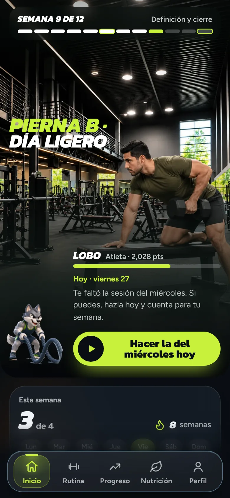
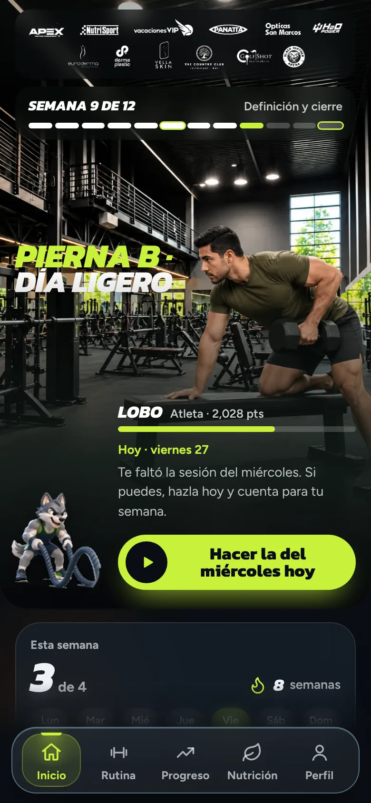
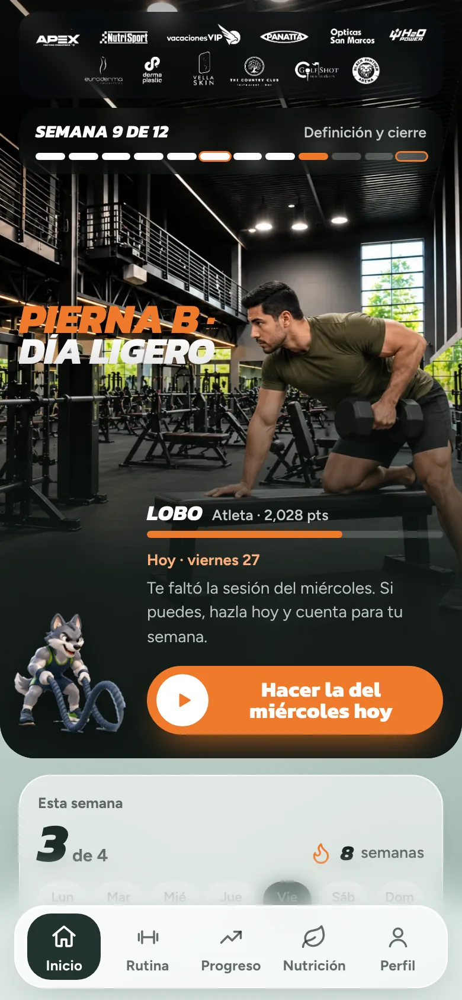
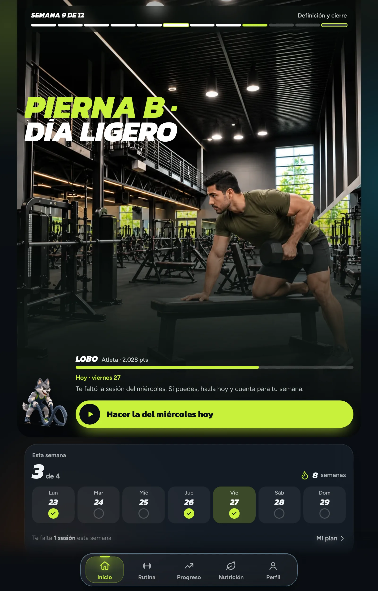
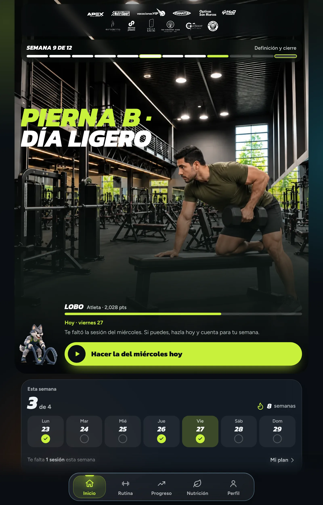

Franja de patrocinadores
Los logos del banner, juntos y pequeños, arriba de la tarjeta de Inicio. La barra del reto y el título del entrenamiento bajan para hacerles lugar.

Actual

Con la franja · Oscuro

Con la franja · Salvia
En tableta

Actual
Con la franjaCómo está hecha
- Los 12 logos se recortaron del banner del reto y se dejaron en blanco con fondo transparente, en dos filas como en el banner.
- Van sobre un vidrio oscuro para leerse sobre cualquier parte de la foto y en los tres temas.
- La barra "Arranca en…/Semana X de 12" y el título bajan lo que mide la franja; el resto de la tarjeta no cambia.